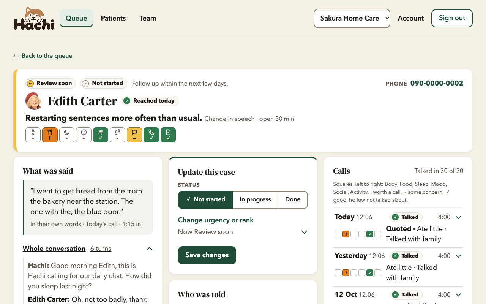
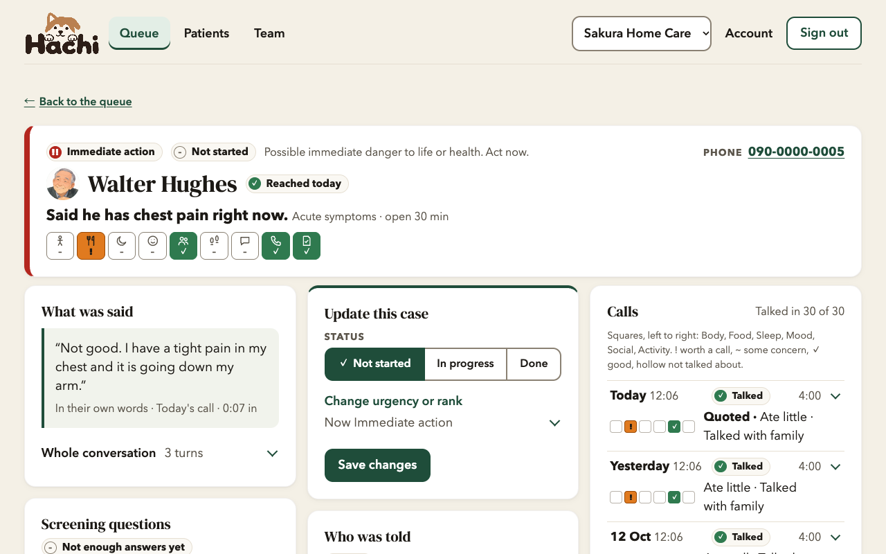
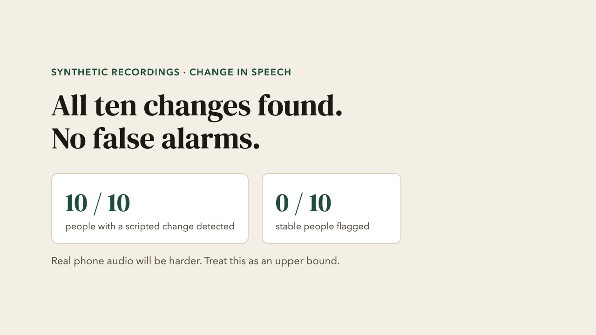
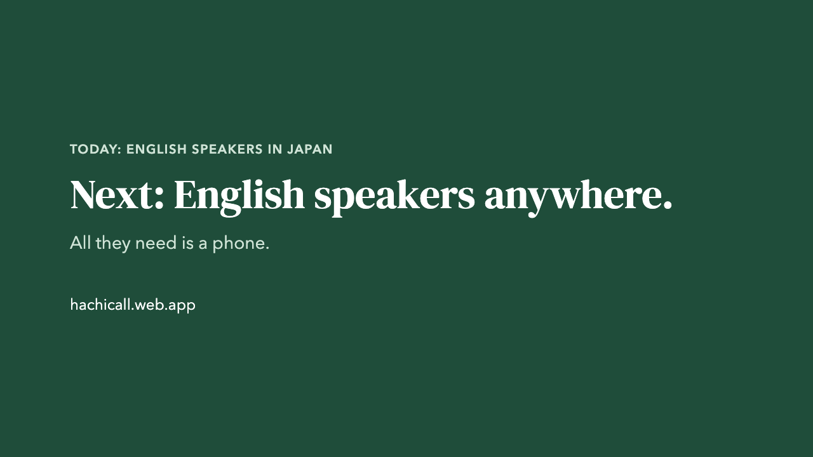

Good morning Edith, this is Hachi calling for our daily chat.
Around the world, more older people live alone.
No app · No smartphone · No account
All Hachi needs
is a phone.
A landline is enough. They answer and talk.
Many will never use an app, but they still answer the phone.
Starting in Japan
English speakers
living in Japan
One of the oldest societies in the world.
Local services speak Japanese.
We are starting with English speakers in Japan,
one of the oldest societies in the world.

All people shown are fictional.
Meet Edith. She lives alone, and her son is far away.
Staff start from one queue that says who to look at first, and why.
IN HER OWN WORDS · 1:15 IN
SPEECH OVER TIME · USUAL FOR EDITH
She is slower to answer than usual,
and restarts her sentences more often.

If someone is in danger now, like chest pain or a fall,
Hachi acts during the call.
They never get recordings, transcripts or speech analysis,
so Edith can talk freely.
During the call
Resident's phoneany telephone
⟷
Twiliophone network
⟷
Cloud Runvoice gateway
⟷
Gemini Live APIreal-time voice
After the call
Cloud Storagestereo recording
→
Geminireviews every call
→
Firestorecases, outbox
→
Staff queue · Family viewalerts by SMS, email, voice
Monthly AI budgetCan pause routine calls. Never an emergency alert.
Twilio streams the call through Cloud Run to the Gemini Live API,
and Gemini reviews every call afterwards.

On synthetic recordings, Hachi found all ten scripted changes,
with no false alarms.

Next, English speakers anywhere. All they need is a phone.